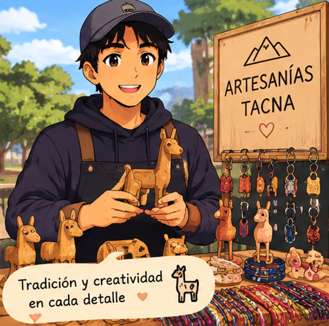
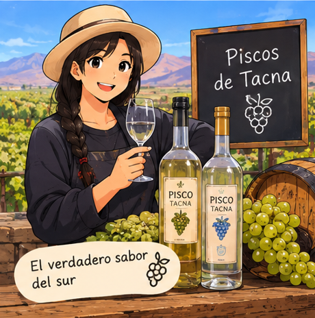

Encuentra con facilidad
Busca por producto, categoría o actividad y descubre alternativas sin recorrer varios lugares.
Desde sabores de nuestra tierra hasta ideas creadas por estudiantes: explora productos locales, conoce quién los hace y conversa directamente para resolver tus dudas.
 Sabores que cuentan historias
Sabores que cuentan historias
Creaciones locales Ideas universitarias
Ideas universitariasUMART reúne muestras de distintos rubros para que explores opciones, conozcas su origen y encuentres cómo contactar a cada iniciativa.
Busca por producto, categoría o actividad y descubre alternativas sin recorrer varios lugares.
Acércate a las historias detrás de los productos y proyectos que llaman tu atención.
Consulta disponibilidad, precios y entrega con cada negocio por sus canales publicados.
Descubre propuestas universitarias, comercios y productos regionales de Tacna.
Elige un distrito y un rubro para consultar zonas comerciales de referencia y continuar tu búsqueda en la plataforma.
Explora ejemplos de distintos rubros; las tarjetas enlazan con la plataforma UMART para consultar su oferta actual. Los productos de productores están identificados como ejemplos visuales.
Detalles creativos inspirados en nuestra ciudad.
Abrir la plataforma →
Una muestra de sabores preparados para compartir.
Abrir la plataforma →Ideas dulces que nacen en la comunidad estudiantil.
Abrir la plataforma →Una muestra de productos asociados a la producción olivícola de Tacna.
Muestra ilustrativa
Conoce una muestra visual dedicada a un cultivo emblemático de la región.
Muestra ilustrativa
Una muestra de productos elaborados en las provincias altas.
Muestra ilustrativa
Una muestra ilustrativa de productos vitivinícolas regionales.
Muestra ilustrativa
Descubre una muestra visual inspirada en los viñedos de la región.
Muestra ilustrativa
Productos prácticos compartidos por proyectos universitarios.
Abrir la plataforma →Explora primero; si algo te interesa, consulta directamente con quien lo ofrece.
Busca por categoría o recorre las galerías de comercios y proyectos universitarios.
Revisa la muestra, el rubro y la información disponible para decidir qué consultar.
Escribe por los canales que el emprendimiento tenga publicados para coordinar disponibilidad, pago y entrega.
La confianza también se construye compartiendo opiniones auténticas.
UMART todavía no muestra valoraciones reales de compradores. Cuando esa función esté disponible, esta sección podrá presentar comentarios auténticos con autorización de sus autores.
Lo esencial para explorar UMART con claridad.
Esta página te ayuda a conocer UMART. Al elegir “Ver la vitrina en UMART” irás a la plataforma para explorar las opciones disponibles.
Algunas son ejemplos de galerías y las de productores están identificadas como ilustrativas. Confirma siempre los detalles con el negocio; la página no garantiza stock ni precios.
Abre la plataforma para revisar las opciones disponibles y los canales de contacto que cada emprendimiento haya publicado. Las muestras ilustrativas de productores de esta página todavía no enlazan a perfiles o vendedores reales.
Sí. Explora las galerías separadas de Universidad y Todo Tacna para ver ejemplos de distintas categorías.
El carrito, los pagos dentro de la plataforma y las reseñas verificadas aún no están habilitados en esta vitrina.
Esta página está pensada para quienes buscan productos. Si quieres conocer el espacio informativo dirigido a negocios y productores, puedes abrirlo cuando tú decidas.
Explora productos, conoce nuevas ideas y encuentra una opción que te gustaría probar.
Ver la vitrina en UMART